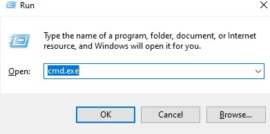
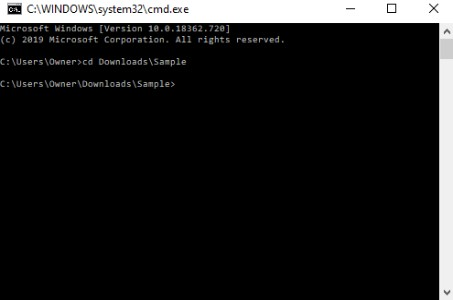
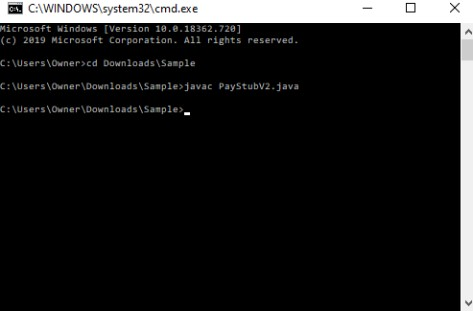
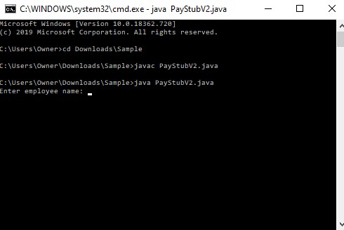

Prerequisites¶
To use PaystubV2:¶
- You must have a computer with a terminal
- You must have a computer with a Java compiler installed.
Note
If you do not have a Java compiler you can visit this site http://www.cs.utah.edu/~alee/cs51/penv/installJava
How to run PayStubV2 in command prompt:
- Press the windows button and R key simultaneously.
- Type cmd.exe in the open field.
- If that doesn’t work, then consider opening the command prompt from the start menu.

(Successfully completing steps 1 and 2 will render this window)
- Use cd command to modify working directory.
- If you want to navigate to the Sample folder within your Downloads folder, enter cd DownloadsSample.
- You can see what is in the current directory by typing dir and pressing enter.

(Successfully completing step 3 will render this window)
- Compile the program by typing javac filename.java in the command line.
- Press enter
- During this process, if any errors are detected the command prompt will let you know.

(This should be what your window looks like after completing steps 4 and 5)
- Now that the program is compiled, run the program by typing java filename.java.
- Press enter

(This should be what your window looks like after completing steps 6 and 7)